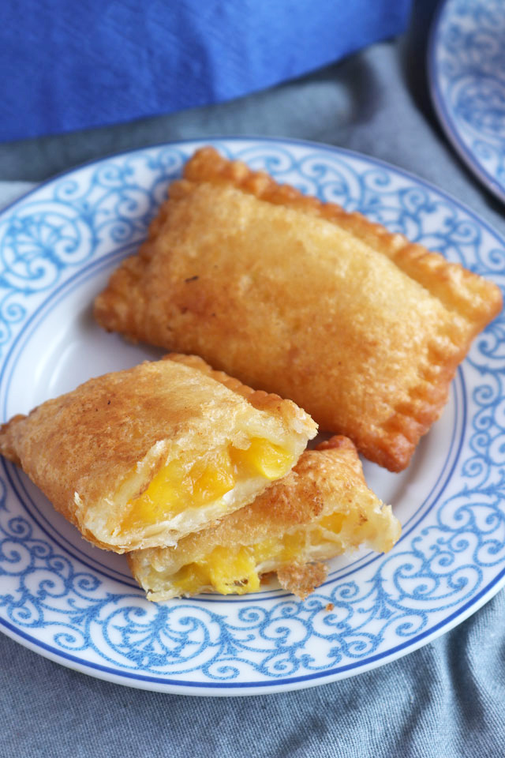

Peach Mango Pie (Air-Fried)

Peach mango pie is a popular dessert from a fast-food restaurant in the Philippines, called Jollibee. The combination of peach and mango could not be more perfect and the light, crispy fried crust that encloses is enough to make you want to have a bite as soon as its heavenly aroma hits you in the face.
This recipe uses loaf breads instead of puff pastry sheets.
Ingredients
- 12 slices loaf bread
- 1 cup Good Life breadcrumns
- 2 tablespoons all-purpose flour
- 2 eggs beaten
Filling Ingredients
- 15 oz mango diced
- 15 ounces peach diced
- 10 tablespoons granulated white sugar
- 1 tablespoons cornstarch
- 1 teaspoon lemon juice
- A pinch of salt
- 1/2 teaspoon vanilla extract
- 3 tablespoons water
Steps
- Make the filling by combining mangoes, peaches, sugar, vanilla extract, lemon juice, and salt in a bowl. Mix well.
- Pour the mixture in a pan. Cook for 5 minutes.
- Combine cornstarch and water to create a slurry. Mix well. Pour the mixture into the pan. Stir and continue cooking until the mixture thickens. Remove from the pan and let it cool down.
- Lay each slice of loaf on a chopping board. Slice-out the dark edges. Dust flour on your rolling pin and then flatten each bread slices.
- Scoop around 2 1/2 tablespoons of filling mixture and put it on the center of the flattened bread. Make bread pockets by covering the filling. Do this by folding the bread symmetrically. Brush beaten egg on the sides and secure it by pressing the edges against each other. Do this step until all the filling are consumed.
- Dredge the bread pockets in all-purpose flour. Dip in beaten egg. Roll it in Good Life Breadcrumbs. Spray cooking oil on both sides and then arrange in a clean plate. Let it stay for at least 5 minutes.
- Air fry in 370F until the breadcrumbs turns golden brown. Flip the peach mango pie and do the same on the opposite side. Serve. Share and enjoy!